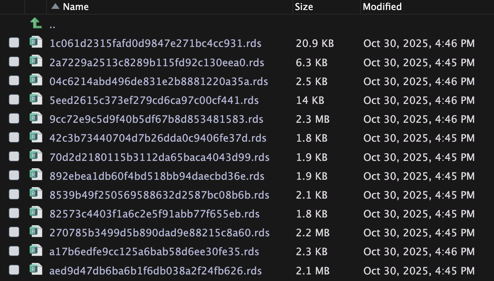

Optimiza la velocidad de tus aplicaciones Shiny con bindCache()
4/11/2025

En una aplicación Shiny, cada interacción que la/el usuario hace suele conllevar un cálculo de R que se ejecuta para producir un output, como una tabla o un gráfico. Dependiendo de la cantidad de datos, de la complejidad del cálculo o del output, estas interacciones pueden tomar más tiempo del esperado.
Una forma de optimizar la velocidad de una aplicación Shiny es implementando un cache. Un cache significa que los resultados de los cálculos realizados por la app se guardan, de modo que si el cálculo se repite, el resultado se obtiene desde el cache, sin necesidad de volver a ejecutar el cálculo. En la mayoría de los casos esto significa una gran mejora de velocidad! 🚀
Consideraciones previas
Antes que nada, hay que ver si es posible (o si vale la pena) implementar un cache para cada situación.
¿Cuándo agregar un cache?
- Si los cálculos son repetitivos; es decir, que uno o varios usuarios pueden volver a solicitar el mismo cálculo varias veces.
- Si los cálculos son determinísticos; es decir, que para los mismos inputs siempre se produzca el mismo output. No tiene sentido si el cálculo implica azar o variables fuera del control de la app, como la fecha u hora.
- Si la cantidad de inputs que definen el cálculo es baja, porque si son demasiados inputs, no tiene sentido agregar un cache para interacciones que escasamente se van a repetir.
- Si los inputs son limitados, ya que si son muy específicos (como un campo de texto o el subir un archivo) tampoco tiene sentido cachear un input que no se va a repetir.
Implementando el cache
Con la función bindCache() podemos hacer que un output (gráficos, tablas, textos dinámicos) o un objeto reactivo (creado con reactive() y que se actualiza según su dependencia de inputs u otros objetos reactivos) guarden sus resultados en un cache.
calculo_lento <- reactive({
# cálculo que demora mucho
}) |>
bindCache()
Al especificar que queremos cachear un objeto/output, también debemos que explicitar sus dependencias: los inputs u objetos cuyo valor hace que el cálculo cambie.
calculo_lento <- reactive({
# cálculo que demora mucho
}) |>
bindCache(input$selector_1,
input$selector_2)
En este ejemplo, el objeto reactivo calculo_lento depende de los valores de input$selector_1 e input$selector_2, definidos por el/la usuario/a de la app.
Cuando un usuario/a elija estos inputs y por consiguiente obtenga un resultado de calculo_lento(), el cache se guardará para la combinación de valores de estos dos inputs.
Entonces: si el usuario/a selecciona una combinación que ya ha sido calculada antes, se omite el cálculo y el resultado se carga desde el cache, y si es una combinación nueva, el resultado se calcula y se guarda en el cache para futuras solicitudes.
Comparación de desempeño
En este ejemplo, vemos una aplicación Shiny con varios outputs, los cuales tienen agregado bindCache().
En la primera ejecución, la app demora aproximadamente 3 segundos en cargar los outputs por primera vez:
Pero en una segunda ejecución, la carga es casi instantánea, dado que los resultados de los cálculos estaban preguardados:
Una vez que las combinaciones se cargaron, las siguientes veces que se soliciten la carga es mucho más rápida! 🔥
En este ejemplo, el bindCache() se puso en cada output, en la misma función render_x() que general el objeto output$grafico_x, con una dependencia al input$region que hace cambiar los gráficos. Entonces, cuando la/el usuaria/o cambia el input, Shiny se salta todos los cálculos y carga el output correspondiente. Pero puedes experimentar con poner el bindCache() en distintos lugares que puedan ser cuello de botella de tu app.
Configurar el almacenamiento del cache
Por defecto, el cache se guarda en memoria, lo que significa que al cerrar la aplicación, el cache se pierde. Si queremos que el cache persista entre sesiones, podemos configurar el almacenamiento del cache en disco, agregando la siguiente línea en el archivo app.R:
shinyOptions(cache = cachem::cache_disk("./cache"))
De este modo, el cache quedará guardado en la carpeta cache de la app, y podremos ver en tiempo real que los archivos del cache se van generando a medida que los usuarios interactúan con la app.
Esto entrega el beneficio de poder ampliar el cache a múltiples usuarios, porque si varios usuarios solicitan el mismo cálculo, el segundo usuario en adelante obtendrá el resultado desde el cache en disco. También te permite evitar que el primer usuario tenga que esperar la carga de los elementos, al poder subir una app que ya venga con su cache generado.
Otro beneficio es que te entrega el control sobre el cache, en el sentido que simplemente puedes borrar los archivos para obligar que Shiny re-calcule los outputs. Esto sirve para ayudarte cuando cambies el código pero no veas cambios y después te des cuenta que era porque los gráficos se estaban cargando desde el cache 😅
Bonus: generando el cache de antemano
Si quieres evitar que el primer usuario de tu app tenga que esperar a que se generen los cálculos y el cache, puedes generar el cache de antemano. Para esto simplemente configuras que el cache se guarde en el disco, y manualmente exploras las combinaciones de inputs de tu app… lo cual sería bastante aburrido de hacer.
Puedes combinar la generación de cache con el
testeo de aplicaciones Shiny con {shinytest2} para automatizar el uso de tu aplicación, con el doble objetivo de probar que cada interacción de tu app funcione correctamente, y en tanto la app es puesta a prueba, generar un cache de todos los cálculos sin tener que esperar que el usuario realice las interacciones manualmente.